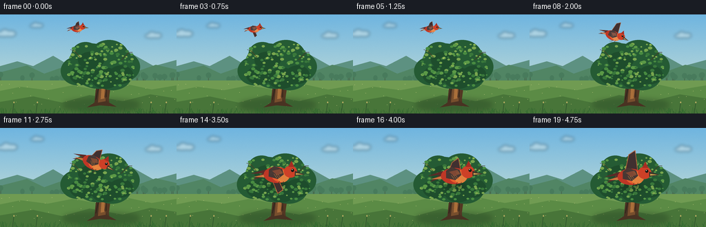
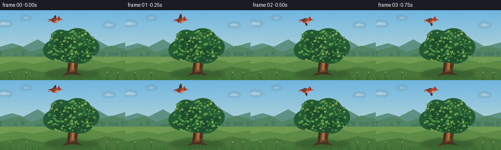

CODING AGENTS AS PIXEL WORLD MODELS
traex/GPT-5.6-Sol · dynamic_spatial_relationship_0046
点击播放 · 原生 RGB 像素
逐轮保存的候选
回放视频、检查图与代码变化。
每份候选均可单独播放。实际图片检查记录在下方工具轨迹中。
候选 01播放与检查图
点击播放 · 原生 RGB 像素


展开代码变化
--- 上一保存版本
+++ 本次保存版本
@@ -0,0 +1,221 @@
+from pathlib import Path
+import math
+import numpy as np
+from PIL import Image, ImageDraw, ImageFilter
+import artifact_io
+
+W, H, N = 256, 144, 20
+SS = 4
+rng = np.random.default_rng(4602)
+
+# Fixed natural details, reused frame to frame so the scene remains temporally stable.
+leaf_data = []
+canopy_blobs = [(132,66,31,24),(158,62,29,25),(177,76,26,22),(143,84,34,24),(113,82,25,21),(163,88,28,22),(124,57,20,17)]
+for _ in range(145):
+ # rejection sample within the broad crown
+ for _try in range(50):
+ x = rng.uniform(94,194); y = rng.uniform(43,105)
+ inside = any(((x-cx)/rx)**2 + ((y-cy)/ry)**2 < 1 for cx,cy,rx,ry in canopy_blobs)
+ if inside:
+ break
+ leaf_data.append((x,y,rng.uniform(1.2,3.2),rng.uniform(-0.7,0.7),rng.integers(0,4)))
+
+grass_data = [(rng.uniform(0,W), rng.uniform(2.5,9), rng.uniform(-3.5,3.5), rng.uniform(.35,.9)) for _ in range(125)]
+distant_trees = [(rng.uniform(-10,270), rng.uniform(5,12), rng.uniform(0.8,1.15)) for _ in range(24)]
+
+
+def S(v): return int(round(v*SS))
+def box(b): return tuple(S(v) for v in b)
+def pts(p): return [(S(x),S(y)) for x,y in p]
+
+def smoothstep(x):
+ x = max(0.0, min(1.0, x))
+ return x*x*(3-2*x)
+
+def make_background(frame):
+ # Vertical sky gradient with very subtle deterministic film-like texture.
+ yy = np.linspace(0,1,H*SS)[:,None,None]
+ top = np.array([111,181,224],dtype=float)[None,None,:]
+ bot = np.array([218,231,212],dtype=float)[None,None,:]
+ arr = top*(1-yy) + bot*yy
+ arr = np.repeat(arr,W*SS,axis=1)
+ # Fine texture avoids flat synthetic expanses without flicker.
+ tex_rng = np.random.default_rng(99)
+ noise = tex_rng.normal(0,1.2,(H*SS,W*SS,1))
+ arr = np.clip(arr+noise,0,255).astype(np.uint8)
+ return Image.fromarray(arr,'RGB')
+
+def draw_clouds(im, frame):
+ layer = Image.new('RGBA',im.size,(0,0,0,0)); d=ImageDraw.Draw(layer)
+ drift = frame*.17
+ clouds = [(-5+drift,25,.72),(43+drift*.6,14,.5),(210+drift*.25,28,.62)]
+ for x,y,z in clouds:
+ c=(246,248,240,95)
+ d.ellipse(box((x,y,x+31*z,y+10*z)),fill=c)
+ d.ellipse(box((x+8*z,y-5*z,x+25*z,y+9*z)),fill=c)
+ d.ellipse(box((x+19*z,y-2*z,x+39*z,y+10*z)),fill=c)
+ layer=layer.filter(ImageFilter.GaussianBlur(S(2.2)))
+ im.alpha_composite(layer)
+
+def draw_landscape(im, frame):
+ d=ImageDraw.Draw(im,'RGBA')
+ # distant blue-green hills
+ d.polygon(pts([(0,94),(0,75),(25,68),(48,75),(77,60),(104,76),(128,67),(157,78),(191,57),(223,75),(256,66),(256,110)]), fill=(93,145,129,150))
+ d.polygon(pts([(0,99),(0,84),(39,74),(64,86),(101,73),(128,85),(160,71),(195,84),(226,73),(256,80),(256,108)]), fill=(81,133,100,175))
+ # distant tree rhythm, muted to preserve foreground focus
+ for x,h,wid in distant_trees:
+ y=98
+ d.rectangle(box((x-.5,y-h*.9,x+.5,y+2)), fill=(72,108,79,100))
+ d.ellipse(box((x-3.8*wid,y-h-3,x+3.8*wid,y-h+5)), fill=(72,123,92,110))
+ # meadow gradient bands
+ d.rectangle(box((0,96,256,144)),fill=(112,155,82,255))
+ d.polygon(pts([(0,111),(30,105),(69,110),(105,103),(145,110),(183,101),(220,109),(256,103),(256,144),(0,144)]), fill=(91,139,69,255))
+ d.polygon(pts([(0,127),(48,119),(90,128),(130,117),(178,126),(218,116),(256,122),(256,144),(0,144)]), fill=(72,117,57,255))
+ # pale field flecks
+ for k in range(38):
+ x=(k*47+13)%256; y=101+((k*29)%34)
+ d.ellipse(box((x,y,x+0.8,y+0.55)),fill=(207,209,133,90))
+
+def draw_tree(im, frame):
+ # Ground shadow
+ shadow=Image.new('RGBA',im.size,(0,0,0,0)); sd=ImageDraw.Draw(shadow)
+ sd.ellipse(box((91,123,202,140)),fill=(31,63,34,92))
+ shadow=shadow.filter(ImageFilter.GaussianBlur(S(4)))
+ im.alpha_composite(shadow)
+ d=ImageDraw.Draw(im,'RGBA')
+ wind=math.sin(frame*.35)*.6
+ # trunk silhouette and roots
+ d.polygon(pts([(137,128),(141,87),(145,68),(151,67),(156,91),(158,128),(169,134),(145,132),(126,135)]), fill=(73,50,34,255))
+ d.polygon(pts([(142,128),(146,89),(149,72),(153,73),(153,126)]), fill=(119,78,45,255))
+ d.polygon(pts([(151,119),(159,93),(164,80),(168,80),(161,99),(157,128)]),fill=(83,55,35,255))
+ d.polygon(pts([(145,102),(130,83),(118,76),(120,72),(135,79),(149,93)]),fill=(82,54,35,255))
+ d.polygon(pts([(151,90),(170,70),(181,65),(182,69),(172,74),(156,99)]),fill=(78,52,34,255))
+ # warm bark highlights
+ d.polygon(pts([(146,123),(148,95),(150,82),(152,94),(151,122)]),fill=(169,111,58,145))
+ d.line(pts([(139,124),(144,101),(143,88)]),fill=(42,34,28,115),width=S(1))
+ d.line(pts([(154,120),(154,102),(159,88)]),fill=(45,34,25,110),width=S(1))
+
+ # Crown mass: dark under-canopy first, then layered individual clusters.
+ for cx,cy,rx,ry in canopy_blobs:
+ d.ellipse(box((cx-rx+wind,cy-ry,cx+rx+wind,cy+ry)),fill=(37,91,52,255))
+ # underside depth patches
+ for b in [(101,75,139,102),(132,77,173,108),(158,74,193,101),(113,54,151,79)]:
+ d.ellipse(box(b),fill=(30,77,44,155))
+ palettes=[(57,119,59,230),(72,139,65,235),(91,153,70,225),(121,166,78,220)]
+ for idx,(x,y,r,jit,col) in enumerate(leaf_data):
+ sway=math.sin(frame*.28 + idx*.63)*(.18 + .25*(y<65))
+ rr=r
+ color=palettes[col]
+ d.ellipse(box((x-rr+sway+wind,y-rr*.72,x+rr+sway+wind,y+rr*.72)),fill=color)
+ # sunlit crown accents, concentrated upper-left
+ for x,y,r,_,_ in leaf_data[::8]:
+ if y<76:
+ d.ellipse(box((x-r*.55+wind,y-r*.5,x+r*.45+wind,y+r*.25)),fill=(166,190,91,125))
+ # a few crisp twigs around edge
+ d.line(pts([(116+wind,62),(108+wind,53),(102+wind,51)]),fill=(70,65,37,150),width=S(.7))
+ d.line(pts([(176+wind,66),(187+wind,55),(192+wind,55)]),fill=(67,62,35,150),width=S(.7))
+
+def bird_state(i):
+ t=i/(N-1)
+ travel=smoothstep((t-.22)/.58)
+ # Hold clearly above at first; finish hovering in the tree's frontal plane.
+ if travel < .001:
+ x=111 + math.sin(i*.8)*1.0
+ y=20 + math.sin(i*.65)*.7
+ else:
+ x=111 + 34*travel
+ y=20 + 49*travel - 5.5*math.sin(math.pi*travel)
+ if travel>.98:
+ x += math.sin(i*.8)*1.2; y += math.sin(i*.7)*.8
+ scale=.60 + .88*travel
+ # Descending attitude eases level as it reaches the foreground hover.
+ angle=29*math.sin(math.pi*travel) if 0<travel<1 else 0
+ return x,y,scale,angle,travel
+
+def draw_bird_shadow(im,x,y,scale,travel):
+ if travel<.55: return
+ layer=Image.new('RGBA',im.size,(0,0,0,0)); d=ImageDraw.Draw(layer)
+ alpha=int(70*(travel-.55)/.45)
+ # Projected shadow on foliage makes the final foreground relation unambiguous.
+ d.ellipse(box((x-10*scale,y+8*scale,x+12*scale,y+14*scale)),fill=(18,34,24,alpha))
+ layer=layer.filter(ImageFilter.GaussianBlur(S(3.2)))
+ im.alpha_composite(layer)
+
+def create_bird(scale, phase, angle):
+ # Bird is rendered on a transparent supersampled card then rotated as one object.
+ sz=96*SS
+ card=Image.new('RGBA',(sz,sz),(0,0,0,0)); d=ImageDraw.Draw(card,'RGBA')
+ c=48*SS
+ def B(vals): return tuple(int(round(c+v*scale*SS)) for v in vals)
+ def PP(arr): return [(int(round(c+x*scale*SS)),int(round(c+y*scale*SS))) for x,y in arr]
+ flap=math.sin(phase)
+ # soft drop edge behind body
+ d.ellipse(B((-12,-4,13,8)),fill=(77,23,18,70))
+ # far wing, changes silhouette dramatically through each flap
+ if flap>=0:
+ tip_y=-8-13*flap
+ wing=PP([(-5,-2),(-1,tip_y),(5,tip_y-4),(8,-1),(4,5),(-3,5)])
+ else:
+ tip_y=7-14*flap
+ wing=PP([(-6,-1),(1,2),(8,tip_y),(3,tip_y+4),(-3,7)])
+ d.polygon(wing,fill=(64,48,48,255))
+ # copper edging and primary feather divisions
+ d.line(wing+[wing[0]],fill=(196,100,57,230),width=max(1,int(scale*SS*.8)))
+ # tail feathers (left/back)
+ d.polygon(PP([(-9,2),(-23,7),(-13,0),(-25,1),(-10,-4)]),fill=(91,43,39,255))
+ d.polygon(PP([(-11,1),(-22,4),(-10,4)]),fill=(225,121,63,210))
+ # plump orange-red body with lit breast
+ d.ellipse(B((-12,-7,14,9)),fill=(190,55,38,255))
+ d.ellipse(B((-4,-5,14,8)),fill=(230,92,45,255))
+ d.ellipse(B((1,-3,13,8)),fill=(244,132,62,230))
+ # near wing sits on body
+ wing2=PP([(-7,-4),(-2,-8),(6,-5),(8,0),(2,5),(-7,3)])
+ d.polygon(wing2,fill=(72,54,51,245))
+ d.polygon(PP([(-4,-3),(4,-5),(7,-1),(1,1)]),fill=(135,72,52,230))
+ for q in range(3):
+ d.line(PP([(-2+q*2,0),(1+q*2,4)]),fill=(224,121,63,180),width=max(1,int(scale*SS*.45)))
+ # head, small crest, beak
+ d.ellipse(B((8,-9,21,3)),fill=(205,64,39,255))
+ d.polygon(PP([(12,-8),(15,-14),(18,-8)]),fill=(166,45,34,255))
+ d.polygon(PP([(19,-4),(29,-1),(19,1)]),fill=(61,50,42,255))
+ d.polygon(PP([(20,-2),(27,-1),(20,-.2)]),fill=(232,174,83,210))
+ # eye and highlight
+ d.ellipse(B((15,-6,18,-3)),fill=(25,24,21,255))
+ d.ellipse(B((15.7,-5.7,16.5,-4.9)),fill=(255,245,213,255))
+ # feet trailing subtly
+ d.line(PP([(4,7),(2,11),(-1,12)]),fill=(77,45,36,230),width=max(1,int(scale*SS*.65)))
+ d.line(PP([(8,7),(7,11),(5,12)]),fill=(77,45,36,230),width=max(1,int(scale*SS*.65)))
+ if abs(angle)>0.1:
+ card=card.rotate(-angle,resample=Image.Resampling.BICUBIC,expand=False)
+ return card
+
+def draw_grass(im, frame):
+ d=ImageDraw.Draw(im,'RGBA')
+ for idx,(x,h,bend,a) in enumerate(grass_data):
+ y=144
+ sway=math.sin(frame*.23+idx*.41)*.35
+ color=(45,91+idx%20,45,int(150+80*a))
+ d.line(pts([(x,y),(x+bend+sway,y-h)]),fill=color,width=max(1,S(.45)))
+ # tiny foreground seed heads
+ for x in [18,52,217,239]:
+ d.line(pts([(x,144),(x+2,128)]),fill=(43,79,43,210),width=S(.7))
+ d.ellipse(box((x+1.2,126.5,x+3,129)),fill=(181,171,96,180))
+
+def render(i):
+ bg=make_background(i).convert('RGBA')
+ draw_clouds(bg,i)
+ draw_landscape(bg,i)
+ draw_tree(bg,i)
+ x,y,sc,ang,tr=bird_state(i)
+ draw_bird_shadow(bg,x,y,sc,tr)
+ # wing cycles are continuous and energetic; final frames hover rather than freeze.
+ phase=i*1.72 + .4
+ bird=create_bird(sc,phase,ang)
+ pos=(int(round(x*SS-bird.width/2)),int(round(y*SS-bird.height/2)))
+ bg.alpha_composite(bird,pos)
+ draw_grass(bg,i)
+ out=bg.convert('RGB').resize((W,H),Image.Resampling.LANCZOS)
+ return np.asarray(out,dtype=np.uint8)
+
+frames=np.stack([render(i) for i in range(N)],axis=0)
+artifact_io.save(frames,Path(__file__).resolve().parent)
可观测工具轨迹
实际执行的命令与返回图片。
命令 1exit 0
/bin/bash -lc "cat prompt.txt && printf '\\n---RULES---\\n' && cat GENERATION_RULES.md && printf '\\n---SPEC---\\n' && cat task_spec.json"
命令 2exit 0
/bin/bash -lc "find . -maxdepth 2 -type f -printf '%p\\n' | sort"
命令 3exit 0
/bin/bash -lc 'cat artifact_io.py'
命令 4exit 0
/bin/bash -lc "cat > generate.py <<'PY'
from pathlib import Path
import math
import numpy as np
from PIL import Image, ImageDraw, ImageFilter
import artifact_io
W, H, N = 256, 144, 20
SS = 4
rng = np.random.default_rng(4602)
# Fixed natural details, reused frame to frame so the scene remains temporally stable.
leaf_data = []
canopy_blobs = [(132,66,31,24),(158,62,29,25),(177,76,26,22),(143,84,34,24),(113,82,25,21),(163,88,28,22),(124,57,20,17)]
for _ in range(145):
# rejection sample within the broad crown
for _try in range(50):
x = rng.uniform(94,194); y = rng.uniform(43,105)
inside = any(((x-cx)/rx)**2 + ((y-cy)/ry)**2 < 1 for cx,cy,rx,ry in canopy_blobs)
if inside:
break
leaf_data.append((x,y,rng.uniform(1.2,3.2),rng.uniform(-0.7,0.7),rng.integers(0,4)))
grass_data = [(rng.uniform(0,W), rng.uniform(2.5,9), rng.uniform(-3.5,3.5), rng.uniform(.35,.9)) for _ in range(125)]
distant_trees = [(rng.uniform(-10,270), rng.uniform(5,12), rng.uniform(0.8,1.15)) for _ in range(24)]
def S(v): return int(round(v*SS))
def box(b): return tuple(S(v) for v in b)
def pts(p): return [(S(x),S(y)) for x,y in p]
def smoothstep(x):
x = max(0.0, min(1.0, x))
return x*x*(3-2*x)
def make_background(frame):
# Vertical sky gradient with very subtle deterministic film-like texture.
yy = np.linspace(0,1,H*SS)[:,None,None]
top = np.array([111,181,224],dtype=float)[None,None,:]
bot = np.array([218,231,212],dtype=float)[None,None,:]
arr = top*(1-yy) + bot*yy
arr = np.repeat(arr,W*SS,axis=1)
# Fine texture avoids flat synthetic expanses without flicker.
tex_rng = np.random.default_rng(99)
noise = tex_rng.normal(0,1.2,(H*SS,W*SS,1))
arr = np.clip(arr+noise,0,255).astype(np.uint8)
return Image.fromarray(arr,'RGB')
def draw_clouds(im, frame):
layer = Image.new('RGBA',im.size,(0,0,0,0)); d=ImageDraw.Draw(layer)
drift = frame*.17
clouds = [(-5+drift,25,.72),(43+drift*.6,14,.5),(210+drift*.25,28,.62)]
for x,y,z in clouds:
c=(246,248,240,95)
d.ellipse(box((x,y,x+31*z,y+10*z)),fill=c)
d.ellipse(box((x+8*z,y-5*z,x+25*z,y+9*z)),fill=c)
d.ellipse(box((x+19*z,y-2*z,x+39*z,y+10*z)),fill=c)
layer=layer.filter(ImageFilter.GaussianBlur(S(2.2)))
im.alpha_composite(layer)
def draw_landscape(im, frame):
d=ImageDraw.Draw(im,'RGBA')
# distant blue-green hills
d.polygon(pts([(0,94),(0,75),(25,68),(48,75),(77,60),(104,76),(128,67),(157,78),(191,57),(223,75),(256,66),(256,110)]), fill=(93,145,129,150))
d.polygon(pts([(0,99),(0,84),(39,74),(64,86),(101,73),(128,85),(160,71),(195,84),(226,73),(256,80),(256,108)]), fill=(81,133,100,175))
# distant tree rhythm, muted to preserve foreground focus
for x,h,wid in distant_trees:
y=98
d.rectangle(box((x-.5,y-h*.9,x+.5,y+2)), fill=(72,108,79,100))
d.ellipse(box((x-3.8*wid,y-h-3,x+3.8*wid,y-h+5)), fill=(72,123,92,110))
# meadow gradient bands
d.rectangle(box((0,96,256,144)),fill=(112,155,82,255))
d.polygon(pts([(0,111),(30,105),(69,110),(105,103),(145,110),(183,101),(220,109),(256,103),(256,144),(0,144)]), fill=(91,139,69,255))
d.polygon(pts([(0,127),(48,119),(90,128),(130,117),(178,126),(218,116),(256,122),(256,144),(0,144)]), fill=(72,117,57,255))
# pale field flecks
for k in range(38):
x=(k*47+13)%256; y=101+((k*29)%34)
d.ellipse(box((x,y,x+0.8,y+0.55)),fill=(207,209,133,90))
def draw_tree(im, frame):
# Ground shadow
shadow=Image.new('RGBA',im.size,(0,0,0,0)); sd=ImageDraw.Draw(shadow)
sd.ellipse(box((91,123,202,140)),fill=(31,63,34,92))
shadow=shadow.filter(ImageFilter.GaussianBlur(S(4)))
im.alpha_composite(shadow)
d=ImageDraw.Draw(im,'RGBA')
wind=math.sin(frame*.35)*.6
# trunk silhouette and roots
d.polygon(pts([(137,128),(141,87),(145,68),(151,67),(156,91),(158,128),(169,134),(145,132),(126,135)]), fill=(73,50,34,255))
d.polygon(pts([(142,128),(146,89),(149,72),(153,73),(153,126)]), fill=(119,78,45,255))
d.polygon(pts([(151,119),(159,93),(164,80),(168,80),(161,99),(157,128)]),fill=(83,55,35,255))
d.polygon(pts([(145,102),(130,83),(118,76),(120,72),(135,79),(149,93)]),fill=(82,54,35,255))
d.polygon(pts([(151,90),(170,70),(181,65),(182,69),(172,74),(156,99)]),fill=(78,52,34,255))
# warm bark highlights
d.polygon(pts([(146,123),(148,95),(150,82),(152,94),(151,122)]),fill=(169,111,58,145))
d.line(pts([(139,124),(144,101),(143,88)]),fill=(42,34,28,115),width=S(1))
d.line(pts([(154,120),(154,102),(159,88)]),fill=(45,34,25,110),width=S(1))
# Crown mass: dark under-canopy first, then layered individual clusters.
for cx,cy,rx,ry in canopy_blobs:
d.ellipse(box((cx-rx+wind,cy-ry,cx+rx+wind,cy+ry)),fill=(37,91,52,255))
# underside depth patches
for b in [(101,75,139,102),(132,77,173,108),(158,74,193,101),(113,54,151,79)]:
d.ellipse(box(b),fill=(30,77,44,155))
palettes=[(57,119,59,230),(72,139,65,235),(91,153,70,225),(121,166,78,220)]
for idx,(x,y,r,jit,col) in enumerate(leaf_data):
sway=math.sin(frame*.28 + idx*.63)*(.18 + .25*(y<65))
rr=r
color=palettes[col]
d.ellipse(box((x-rr+sway+wind,y-rr*.72,x+rr+sway+wind,y+rr*.72)),fill=color)
# sunlit crown accents, concentrated upper-left
for x,y,r,_,_ in leaf_data[::8]:
if y<76:
d.ellipse(box((x-r*.55+wind,y-r*.5,x+r*.45+wind,y+r*.25)),fill=(166,190,91,125))
# a few crisp twigs around edge
d.line(pts([(116+wind,62),(108+wind,53),(102+wind,51)]),fill=(70,65,37,150),width=S(.7))
d.line(pts([(176+wind,66),(187+wind,55),(192+wind,55)]),fill=(67,62,35,150),width=S(.7))
def bird_state(i):
t=i/(N-1)
travel=smoothstep((t-.22)/.58)
# Hold clearly above at first; finish hovering in the tree's frontal plane.
if travel < .001:
x=111 + math.sin(i*.8)*1.0
y=20 + math.sin(i*.65)*.7
else:
x=111 + 34*travel
y=20 + 49*travel - 5.5*math.sin(math.pi*travel)
if travel>.98:
x += math.sin(i*.8)*1.2; y += math.sin(i*.7)*.8
scale=.60 + .88*travel
# Descending attitude eases level as it reaches the foreground hover.
angle=29*math.sin(math.pi*travel) if 0<travel<1 else 0
return x,y,scale,angle,travel
def draw_bird_shadow(im,x,y,scale,travel):
if travel<.55: return
layer=Image.new('RGBA',im.size,(0,0,0,0)); d=ImageDraw.Draw(layer)
alpha=int(70*(travel-.55)/.45)
# Projected shadow on foliage makes the final foreground relation unambiguous.
d.ellipse(box((x-10*scale,y+8*scale,x+12*scale,y+14*scale)),fill=(18,34,24,alpha))
layer=layer.filter(ImageFilter.GaussianBlur(S(3.2)))
im.alpha_composite(layer)
def create_bird(scale, phase, angle):
# Bird is rendered on a transparent supersampled card then rotated as one object.
sz=96*SS
card=Image.new('RGBA',(sz,sz),(0,0,0,0)); d=ImageDraw.Draw(card,'RGBA')
c=48*SS
def B(vals): return tuple(int(round(c+v*scale*SS)) for v in vals)
def PP(arr): return [(int(round(c+x*scale*SS)),int(round(c+y*scale*SS))) for x,y in arr]
flap=math.sin(phase)
# soft drop edge behind body
d.ellipse(B((-12,-4,13,8)),fill=(77,23,18,70))
# far wing, changes silhouette dramatically through each flap
if flap>=0:
tip_y=-8-13*flap
wing=PP([(-5,-2),(-1,tip_y),(5,tip_y-4),(8,-1),(4,5),(-3,5)])
else:
tip_y=7-14*flap
wing=PP([(-6,-1),(1,2),(8,tip_y),(3,tip_y+4),(-3,7)])
d.polygon(wing,fill=(64,48,48,255))
# copper edging and primary feather divisions
d.line(wing+[wing[0]],fill=(196,100,57,230),width=max(1,int(scale*SS*.8)))
# tail feathers (left/back)
d.polygon(PP([(-9,2),(-23,7),(-13,0),(-25,1),(-10,-4)]),fill=(91,43,39,255))
d.polygon(PP([(-11,1),(-22,4),(-10,4)]),fill=(225,121,63,210))
# plump orange-red body with lit breast
d.ellipse(B((-12,-7,14,9)),fill=(190,55,38,255))
d.ellipse(B((-4,-5,14,8)),fill=(230,92,45,255))
d.ellipse(B((1,-3,13,8)),fill=(244,132,62,230))
# near wing sits on body
wing2=PP([(-7,-4),(-2,-8),(6,-5),(8,0),(2,5),(-7,3)])
d.polygon(wing2,fill=(72,54,51,245))
d.polygon(PP([(-4,-3),(4,-5),(7,-1),(1,1)]),fill=(135,72,52,230))
for q in range(3):
d.line(PP([(-2+q*2,0),(1+q*2,4)]),fill=(224,121,63,180),width=max(1,int(scale*SS*.45)))
# head, small crest, beak
d.ellipse(B((8,-9,21,3)),fill=(205,64,39,255))
d.polygon(PP([(12,-8),(15,-14),(18,-8)]),fill=(166,45,34,255))
d.polygon(PP([(19,-4),(29,-1),(19,1)]),fill=(61,50,42,255))
d.polygon(PP([(20,-2),(27,-1),(20,-.2)]),fill=(232,174,83,210))
# eye and highlight
d.ellipse(B((15,-6,18,-3)),fill=(25,24,21,255))
d.ellipse(B((15.7,-5.7,16.5,-4.9)),fill=(255,245,213,255))
# feet trailing subtly
d.line(PP([(4,7),(2,11),(-1,12)]),fill=(77,45,36,230),width=max(1,int(scale*SS*.65)))
d.line(PP([(8,7),(7,11),(5,12)]),fill=(77,45,36,230),width=max(1,int(scale*SS*.65)))
if abs(angle)>0.1:
card=card.rotate(-angle,resample=Image.Resampling.BICUBIC,expand=False)
return card
def draw_grass(im, frame):
d=ImageDraw.Draw(im,'RGBA')
for idx,(x,h,bend,a) in enumerate(grass_data):
y=144
sway=math.sin(frame*.23+idx*.41)*.35
color=(45,91+idx%20,45,int(150+80*a))
d.line(pts([(x,y),(x+bend+sway,y-h)]),fill=color,width=max(1,S(.45)))
# tiny foreground seed heads
for x in [18,52,217,239]:
d.line(pts([(x,144),(x+2,128)]),fill=(43,79,43,210),width=S(.7))
d.ellipse(box((x+1.2,126.5,x+3,129)),fill=(181,171,96,180))
def render(i):
bg=make_background(i).convert('RGBA')
draw_clouds(bg,i)
draw_landscape(bg,i)
draw_tree(bg,i)
x,y,sc,ang,tr=bird_state(i)
draw_bird_shadow(bg,x,y,sc,tr)
# wing cycles are continuous and energetic; final frames hover rather than freeze.
phase=i*1.72 + .4
bird=create_bird(sc,phase,ang)
pos=(int(round(x*SS-bird.width/2)),int(round(y*SS-bird.height/2)))
bg.alpha_composite(bird,pos)
draw_grass(bg,i)
out=bg.convert('RGB').resize((W,H),Image.Resampling.LANCZOS)
return np.asarray(out,dtype=np.uint8)
frames=np.stack([render(i) for i in range(N)],axis=0)
artifact_io.save(frames,Path(__file__).resolve().parent)
PY
python generate.py
python - <<'PY'
import numpy as np
from PIL import Image
z=np.load('pixels.npz')['pixels']
print('pixels',z.shape,z.dtype,'range',hex(int(z.min())),hex(int(z.max())))
print('frames',len(list(__import__('pathlib').Path('frames').glob('*.png'))))
PY"命令 5exit 0
/bin/bash -lc "python - <<'PY'
import numpy as np
from PIL import Image
from pathlib import Path
f=np.stack([np.asarray(Image.open(f'frames/{i:02d}.png').convert('RGB')) for i in range(20)])
print('shape/dtype:',f.shape,f.dtype)
print('unique frames:',len({x.tobytes() for x in f}))
print('adjacent mean abs diffs:',np.round(np.abs(np.diff(f.astype(np.int16),axis=0)).mean((1,2,3)),2).tolist())
print('artifact sizes:')
for p in ['pixels.npz','inspection.png','transition_check.png','index.html','generate.py']:
print(p,Path(p).stat().st_size)
# Explicit motion design audit
exec(compile(open('generate.py').read().split('frames=np.stack')[0], 'state', 'exec'))
for i in [0,3,5,8,11,14,17,19]: print(i,tuple(round(v,2) for v in bird_state(i)))
PY"保存候选 1 份；完成命令 5 次；可验证图片返回 0 张。原始 API 响应与完整日志保留在本地。